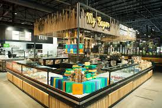

Checkers is a FMCG retailer owned by Shoprite that operates in Southern Africa. Checkers currently has 37 Checkers Hypers and 202 Checkers supermarkets operating in Botswana, South Africa and Namibia.
Founder: Norman Herber
Founded: 1956
Headquarters: Brackenfell, Western Cape, South Africa
Subsidiaries: MediRite (Pty) Ltd., Freshmark (Pty) Ltd, K2019389785 (South Africa) Proprietary Limited
Parent organization: Shoprite
